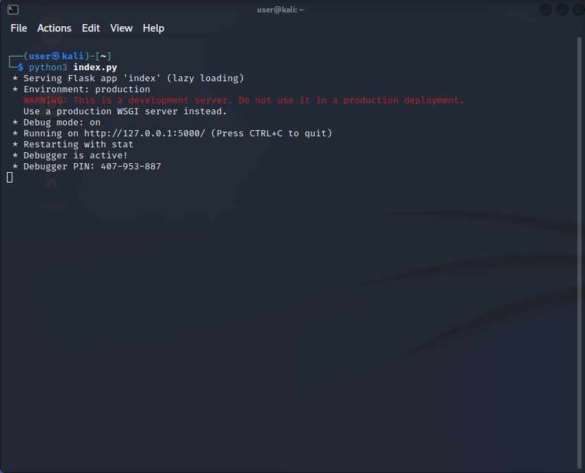
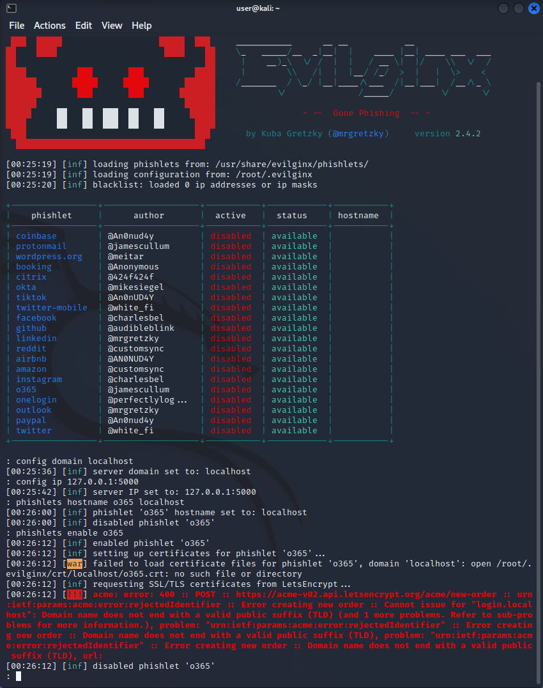

2FA Bypass w/ Evilginx2
SOURCE CODE: www.github.com/jhyungleecs/2fabypassWhat is 2FA/MFA?
Multi-factor authentication can be defined as an extremely powerful and low cost way to protect against the weakest link in cybersecurity defense. (passwords). When a system or framework uses multi-factor authentication, it is referring to using two or more different types of authentication factors in order to create different levels of proof in order to authenticate a user. Some common ways that MFA is used is to combine something you know (password) with something you have (token). Although multi-factor may sound secure, more recently, there have been more attacks that have been proven successful in order to bypass this authentication process. Some of these attacks include MITM attacks, passing the cookie, and exploiting hard and software authenticating technology.
What is evilginx2?
EvilGinx2 is a framework that is used for MITM attacks. Phishing for credentials such as username, password, and even authentication cookies (sessions). Evilginx2 acts as a proxy server between the user and web server that they are trying to access.
What is a proxy server?
Simply put, a proxy server is a gateway that sits between the client and web server that forwards requests from the user and server. There are many reasons to why a proxy server can be used in a network. Some of these reasons include: speed, privacy, security, caching.
The Project
The project I wanted to create, was to run evilginx2 in an isolated home lab using the flask framework in a virtual machine. I wanted to test the phishing attack in my own environment with proper caution and procedure, and my own credentials I created as a “victim account”. The flask app would act as the web server. Evilginx2 would create a fake website that will be served from the local machine. By configuring the domain name and IP to localhost, the fake website is only accessible from the local machine, this allows for the testing to be isolated. The evilginx2 framework is written in GO, which means you would have to have it installed into your system’s shell path. I first opened up flask app and ran it to listen on port 5000.  After installing the installation from source, I ran the framework by using:
Troubleshooting
I ran into a problem constantly with the last command ‘phishlets enable o365’. The error I was receiving was because the Let’s Encrypt certificate generation process was failing because tp notice the domain name I set “localhost” because it wasn’t a public TLD and cannot be used for SSL certificates from public CA.  So instead, I wanted to obtain a self-signed certificate. In order to do this, I used OpenSSL in order to create my own certificate and key. I ran the commands the generate a private key, a certificate signing request, and self-signed SSL certificate: openssl genrsa -out server.key 2048 openssl req -new -key server.key -out server.csr openssl x509 -req -days 365 -in server.csr -signkey server.key -out server.crt After creating my server certificate and key, I had to edit the configuration file which was located in my root folder:
 After relaunching the frameworks and restarting my flask app, I was still getting the same errors.
I am currently stuck on this part and trying to research how to proceed with the next steps. I am receiving the same error, mentioning that the self-signed SSL certificate is not being recognized.
After relaunching the frameworks and restarting my flask app, I was still getting the same errors.
I am currently stuck on this part and trying to research how to proceed with the next steps. I am receiving the same error, mentioning that the self-signed SSL certificate is not being recognized.
Questions & Updates
3/25/23